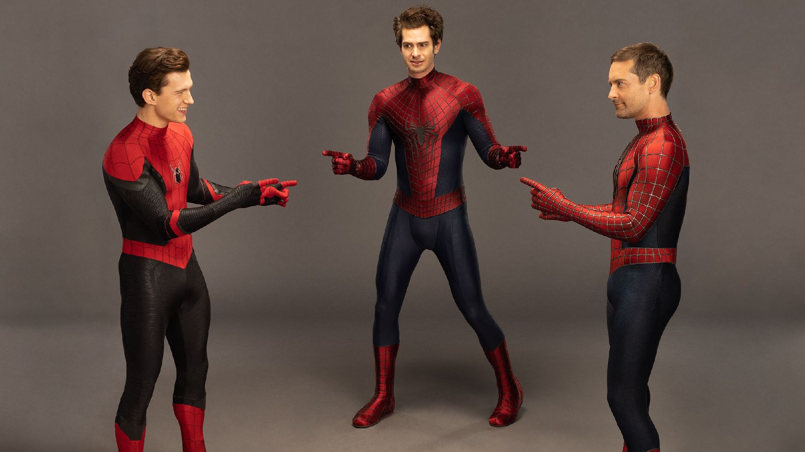

Люди́на-паву́к або Спа́йдермен (англ. Spider-Man), справжнє ім'я — Пітер Бенджамін Паркер (англ. Peter Benjamin Parker) — супергерой коміксів видавництва Marvel Comics, вигаданий Стеном Лі та Стівом Дітко.
Вперше Людина-павук з'явився у серії коміксів Amazing Fantasy #15 у серпні 1962 року.Відтоді він є одним з найпопулярніших і комерційно найуспішніших супергероїв.
Посилання на фільм
Триквел Людини-павука у рамках КВМ був задуманий ще в 2017 році, під час виробництва «Людина-павук: Повернення додому». До серпня 2019 року переговори між Sony та Marvel Studios про зміну їхньої угоди — в якій вони спільно створюють фільми про Людину-павука — закінчилися тим, що Marvel Studios залишила проєкт.
Посилання Людина-Павук-2002